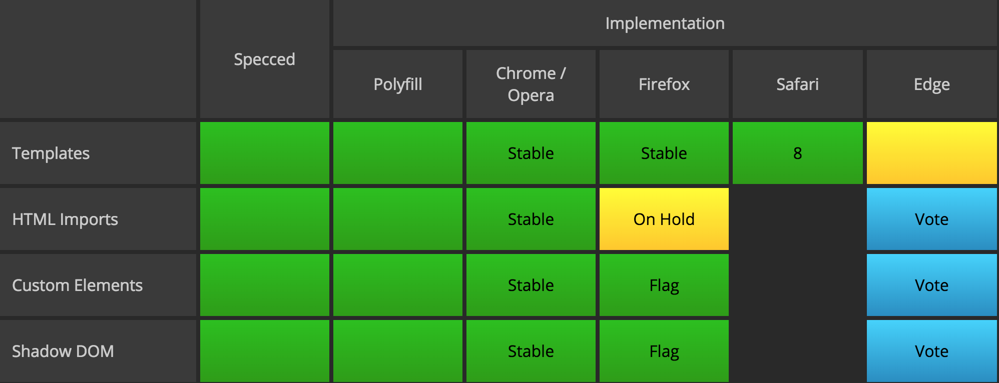
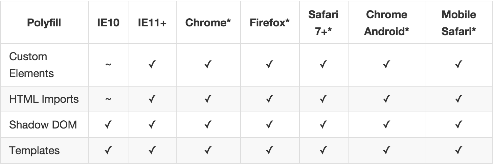

Web Components and Polymer JS
... and lunch
Web Components and Polymer JS
... and lunch
What's the hype?
Component-Based Development using the DOM.
What does it look like?
<video
src="ketchupbot.mp4" controls muted
style="padding: 20px; background-color: red;">
</video>
Sum of Four new W3C Standards:
Custom Elements
Spec TL;DR
- Name must be hyphenated.
- Element must be defined and registered before use.
- Written as either <new-tag></new-tag> or <p is="new-tag"></p>
- Callbacks can be defined on created, attached, detached, attributeChanged
- New Document.registerElement() method, and overloads to Document.createElement() with TypeExtension argument.
- New CSS :unresolved pseudo-class for unregistered elements.
Shadow Dom
Spec TL;DR
- New ShadowRoot object, extends DocumentFragment.
- Elements now have createShadowRoot() method and shadowRoot attribute.
- New content element which acts as an insertion point for content.
- New shadow element which acts as an insertion point for other shadow trees.
HTML Templates
Spec TL;DR
- Parsed, but not rendered.
HTML Imports
Spec TL;DR
- New extension of <link> tag.
- May have an async attribute.
- Map of imports is stored in "Master Document" - the only document that is not an import.
JavaScript is scoped to master document!
Putting it All Together
Beginning

Quote Text
<div class="quote-div" style="...">
<img src="..." style="..."></img>
<h4 style="...">Quote Text</h4>
</div>
Putting it All Together
Custom Element
<script>
document.registerElement("custom-quote", {
prototype: CustomQuote,
extends: 'div'
});
</script>
Putting it All Together
Template
<template id="template">
<style>
div {
...
}
h4 {
...
}
</style>
<div>
<img src="..."></img>
<h4><content></content></h4>
</div>
</template>
Putting it All Together
Shadow DOM
<script>
var template = document.querySelector('template').content;
var CustomQuote = Object.create(HTMLDivElement.prototype);
CustomQuote.createdCallback = function() {
var shadowRoot = this.createShadowRoot();
var clone = document.importNode(template, true);
shadowRoot.appendChild(clone);
};
</script>
Putting it All Together
HTML Import and Usage
<head>
...
<link rel="import" href="custom-quote.html"></link>
...
</head>
<body>
...
<custom-quote>My Text Here!</custom-quote>
<div is="custom-quote">Alternate syntax!</div>
...
</body>
Working Example
Implementation
Browser Support
Implementation
Polyfills!
webcomponents.js
Web Components:
- Custom Elements
- HTML Imports
- Shadow DOM
DOM:
- WeakMap - Shim for ES6 WeakMap type.
- Mutation Observers - Efficiently watch for changes in the DOM.
Implementation
"Evergreen Browsers"
Questions?
Polymer?
- Simpler syntax.
- Data binding.
- Animations.
Polymer Example
<dom-module id="polymer-quote">
<template>
...
</template>
<script>
Polymer({
is: 'polymer-quote'
});
</script>
</dom-module>
Polymer Example
More Polymer
- factoryImpl function
- extends attribute
- Lifecycle callbacks - created, attached, attributeChanged, etc.
- ready callback - between created and attached
- hostAttributes - array, serializes to strings
- Polymer.Class() - registers, but doesn't create
Data Binding
- <element attr="{{variable}}"></element>
- <element>{{variable}}</element>
- <element>Text, then {{variable}}</element> - invalid!
Look familiar?
Ember!
Component Library
Thank You!
github.com/FrazerSeymour/web-components-lunch-and-learn
HTML5Rocks Tutorials Google I/O TalksWeb Components - A Tectonic Shift for Web Development (2013)
Web Components In Action (2013)
EmberConf